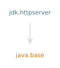

模块 jdk.httpserver
The com.sun.net.httpserver package defines a high-level API for
building servers that support HTTP and HTTPS. The SimpleFileServer class
implements a simple HTTP-only file server intended for testing, development
and debugging purposes. A default implementation is provided via the
jwebserver tool and the main entry point of the module, which can
also be invoked with java -m jdk.httpserver.
The com.sun.net.httpserver.spi package specifies a Service Provider
Interface (SPI) for locating HTTP server implementations based on the
com.sun.net.httpserver API.
System properties used by the HTTP server API
The following is a list of JDK specific system properties used by the default HTTP server implementation in the JDK. Any properties below that take a numeric value assume the default value if given a string that does not parse as a number.
sun.net.httpserver.idleInterval(default: 30 sec)
Maximum duration in seconds which an idle connection is kept open. This timer has an implementation specific granularity that may mean that idle connections are closed later than the specified interval. Values less than or equal to zero are mapped to the default setting.jdk.httpserver.maxConnections(default: -1)
The maximum number of open connections at a time. This includes active and idle connections. If zero or negative, then no limit is enforced.sun.net.httpserver.maxIdleConnections(default: 200)
The maximum number of idle connections at a time. If set to zero or a negative value then connections are closed after use.sun.net.httpserver.drainAmount(default: 65536)
The maximum number of bytes that will be automatically read and discarded from a request body that has not been completely consumed by itsHttpHandler. If the number of remaining unread bytes are less than this limit then the connection will be put in the idle connection cache. If not, then it will be closed.sun.net.httpserver.maxReqHeaders(default: 200)
The maxiumum number of header fields accepted in a request. If this limit is exceeded while the headers are being read, then the connection is terminated and the request ignored. If the value is less than or equal to zero, then the default value is used.sun.net.httpserver.maxReqHeaderSize(default: 393216 or 384kB)
The maximum header field section size that the server is prepared to accept. This is computed as the sum of the size of the header name, plus the size of the header value, plus an overhead of 32 bytes for each field section line. The request line counts as a first field section line, where the name is empty and the value is the whole line. If this limit is exceeded while the headers are being read, then the connection is terminated and the request ignored. If the value is less than or equal to zero, there is no limit.sun.net.httpserver.maxReqTime(default: -1)
The maximum time in milliseconds allowed to receive a request headers and body. In practice, the actual time is a function of request size, network speed, and handler processing delays. A value less than or equal to zero means the time is not limited. If the limit is exceeded then the connection is terminated and the handler will receive aIOException. This timer has an implementation specific granularity that may mean requests are aborted later than the specified interval.sun.net.httpserver.maxRspTime(default: -1)
The maximum time in milliseconds allowed to receive a response headers and body. In practice, the actual time is a function of response size, network speed, and handler processing delays. A value less than or equal to zero means the time is not limited. If the limit is exceeded then the connection is terminated and the handler will receive aIOException. This timer has an implementation specific granularity that may mean responses are aborted later than the specified interval.sun.net.httpserver.nodelay(default: false)
Boolean value, which if true, sets theTCP_NODELAYsocket option on all incoming connections.
- API说明:
- The API and SPI in this module are designed and implemented to support a minimal HTTP server and simple HTTP semantics primarily.
- 实现说明:
- The default implementation of the HTTP server provided in this module is intended for simple usages like local testing, development, and debugging. Accordingly, the design and implementation of the server does not intend to be a full-featured, high performance HTTP server.
- 模块图:

- 工具指南:
- jwebserver
- 自:
- 9
{kind=link}
-
包
导出包描述Provides a simple high-level Http server API, which can be used to build embedded HTTP servers.Provides a pluggable service provider interface, which allows the HTTP server implementation to be replaced with other implementations. -
服务
使用
Java API 非官方中文翻译项目 · GitHub · 报告此页面的问题或提出改进建议 · 查看完整中文版权声明
中文翻译文本版权 © 2026 本翻译项目贡献者，以 知识共享 署名-相同方式共享 4.0 国际 (CC BY-SA 4.0) 许可证发布。原始英文内容版权归 Oracle 所有，使用受原始许可条款约束。